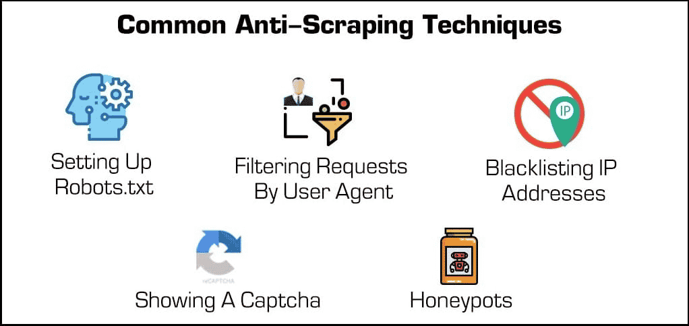

<div class="title-card"> <h1>Databases, ORM, Datas craping, Web crawling</h1> </div> --- # Weekly DevOps pep-talk! Optimize your indexes. Query smart, query fast. --- --- <div class="title-card"> <h1>Databases</h1> </div> --- # What is the most important thing to remember when choosing a database? --- # It should be the right choice for your use case There are many other arguments to consider, but if the above condition is not satisfied then the rest is irrelevant. --- # PostgreSQL vs. MySQL MySQL is a proprietary database, while PostgreSQL is open-source. Scalability and high available features for MySQL are locked behind the Enterprise Edition. MySQL is more used, historically, but that's changing as PostgreSQL is [the preferred choice today](https://survey.stackoverflow.co/2023/#section-most-popular-technologies-databases). PostGreSQL supports JSON and JSONB data types, while MySQL has limited support. https://www.datacamp.com/blog/postgresql-vs-mysql --- <div class="title-card"> <h1>ORM / Migrations</h1> </div> --- # What is an ORM? *How did you work with JPA last semester?* --- # Example: Objection.js How to create models: https://vincit.github.io/objection.js/guide/models.html How to query: https://vincit.github.io/objection.js/guide/getting-started.html --- # What is a migration? *What types of migration exist?* --- # Two types of migrations 1. Schema migration 2. Data migration --- # Example: Knex.js Migration with rollback: https://knexjs.org/guide/migrations.html#transactions-in-migrations --- # How migrations can help you From the assignment: 1. Changes to the schema. Propagating the change for the developers or in production. 2. Migrating data from SQLite to the new database. 3. Backing up the database. (Better solutions might exist here depending on your chosen database). Once you implement web scraping and web crawling, you might need to migrate data from the web to your database. --- # Prisma [Prisma](https://www.prisma.io/orm) officially supports Javascript and Typescript. Community support for Rust, Python, Dart and Go. https://playground.prisma.io/ --- <div class="title-card" style="color: cyan;"> <h1>Web Scraping and Web Crawling</h1> </div> --- # Web Scraping vs. Web Crawling? - **Web <u>scraping</u>**: downloading structured data from the web. [Web scraping](https://en.wikipedia.org/wiki/Web_scraping) = Data scraping - **Web <u>crawling</u>**: traversing and downloading the web pages. --- # Web Scraping vs Data mining Note that the legal documents enforce rules on data mining and not web scraping. Difference: - **Web scraping**: extracting the data. - **Data mining**: analyzing the data (often involving extensive data sets). --- # Rules and legality 1. Do not break websites. 2. You can scrape public data. But if the data isn't intended to be public, you can't scrape it. 3. The Danish law [Ophavsretslovens § 11b](https://www.elov.dk/ophavsretsloven/paragraf/11b/) is based on the EU directive [DSM-direktivets artikel 4.](https://eur-lex.europa.eu/eli/dir/2019/790/oj) 4. Do not violate Copyright laws. 5. Do not violate the GDPR. --- # Anti-scraping Techniques Example: [Pricerunnner - Disallow rules](https://www.pricerunner.dk/robots.txt)  [Source](https://kinsta.com/knowledgebase/what-is-web-scraping/) --- # Politeness https://en.wikipedia.org/wiki/Spider_trap#Politeness Rules for politeness: 1. **Crawl-delay**: Create a delay between requests. 2. **Respect User-agent rules**: The name of the bot. 3. **Respect Allow/Disallow rules**: The pages that should not be crawled. 4. **Respect Sitemap rules**: The sitemap of the website. --- # Web Scraping Tools Example of categories: <img src="./assets_data_scraping_web_crawling/web_scraping_tools.png" alt="web-scraping tools" style="height: 40vh;"> [Source](https://www.scrapingbee.com/blog/web-scraping-tools/) --- <div class="title-card" style="color: cyan;"> <h1>Hands-on: Node (Cheerio)</h1> </div> --- # What is cheerio? [cherio](https://www.npmjs.com/package/cheerio) is an NPM package for parsing and manipulating HTML. It is an implementation of jQuery core but meant for the server (Node.js). --- # Initialize a Node project Install the `cheerio` package: ```bash npm install cheerio ``` --- # Download a page 1. Download this page: https://www.proshop.dk/Baerbar-computer 2. Save it to a file called `proshop.html`. 3. Read the file as a string. *Can you solve the task?* --- # Download a page: Solution ```javascript import fs from "fs"; https://www.proshop.dk/Baerbar-computer const response = await fetch("https://www.proshop.dk/Baerbar-computer"); const result = await response.text(); fs.writeFileSync("index.html", result); const htmlPageString = fs.readFileSync("index.html").toString(); ``` --- # Load the page with cheerio and iterate over the products ```javascript import { load } from "cheerio"; const $ = load(htmlPageString); $("#products [product]").each((index, element) => { console.log($(element).text()); }); ``` --- # Extract the data I want the name, description and price of each product. *Can you find the correct selectors?* --- # Extract the data: Solution ```javascript const name = $(element).find(".site-product-link h2").text(); const description = $(element).find(".site-product-link").text(); const price = $(element).find(".site-currency-lg").text(); console.log(name); console.log(price); ``` --- <div class="title-card" style="color: cyan;"> <h1>Hands-on: BeautifulSoup4</h1> </div> --- --- <div class="title-card" style="color: cyan;"> <h1>Hands-on: Scrapy</h1> </div> --- https://www.youtube.com/watch?v=s4jtkzHhLzY&list=PLRzwgpycm-Fjvdf7RpmxnPMyJ80RecJjv&index=4